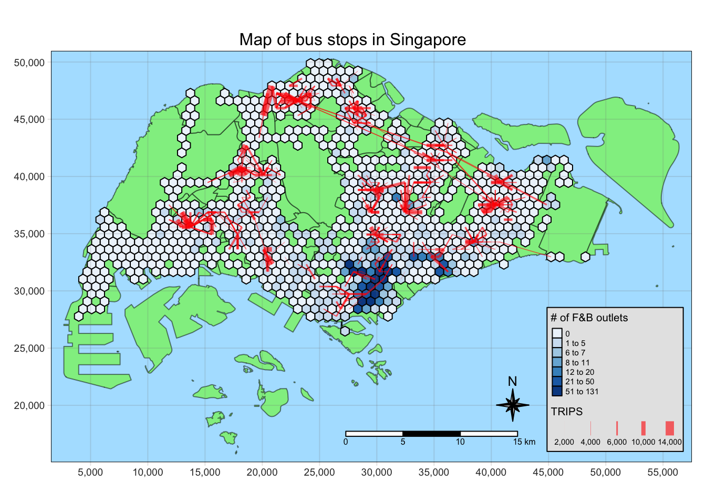
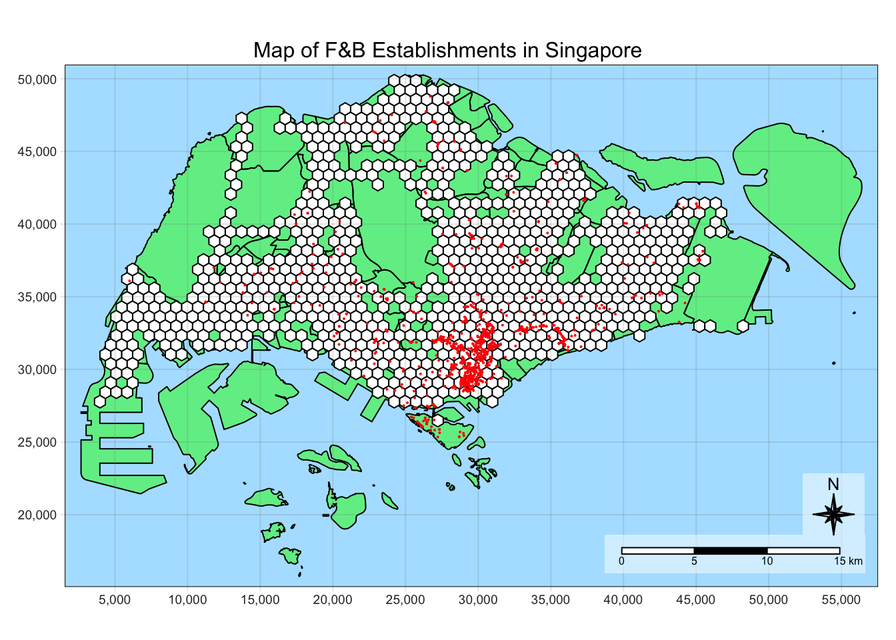
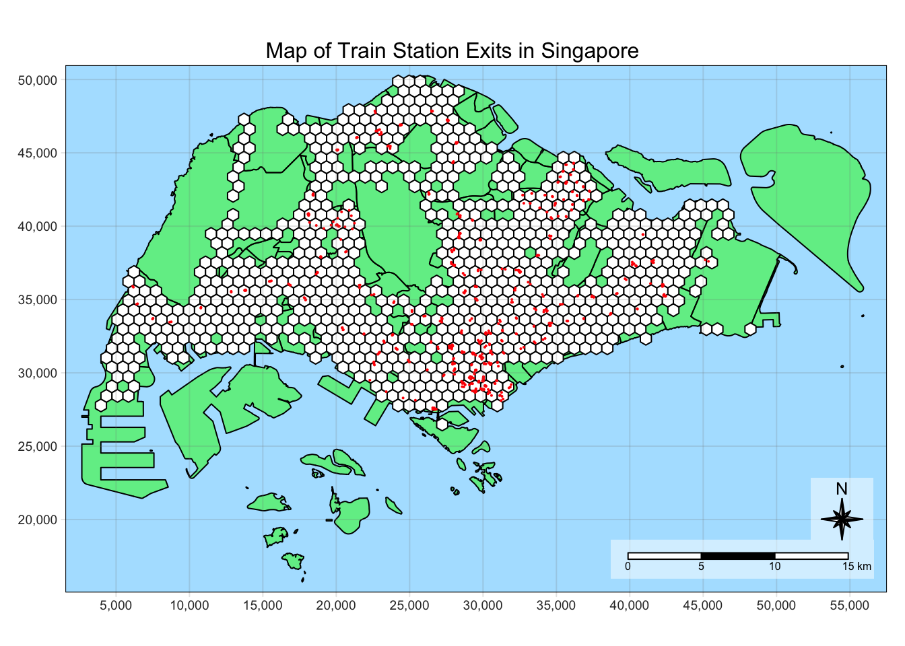
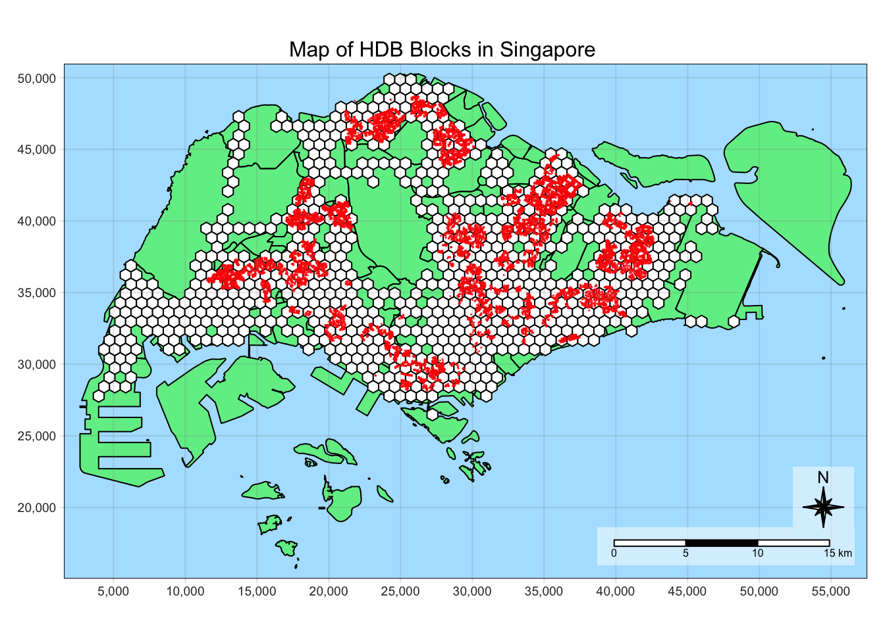
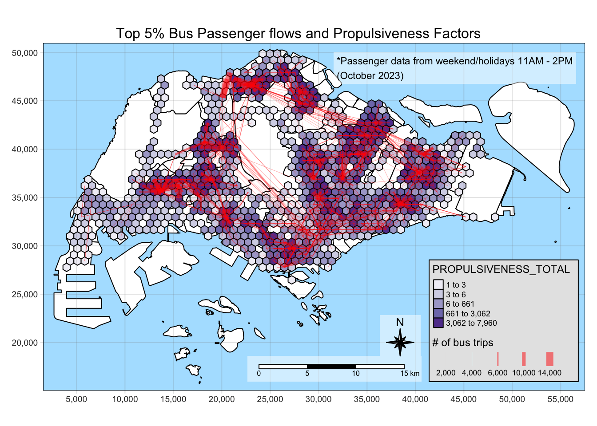
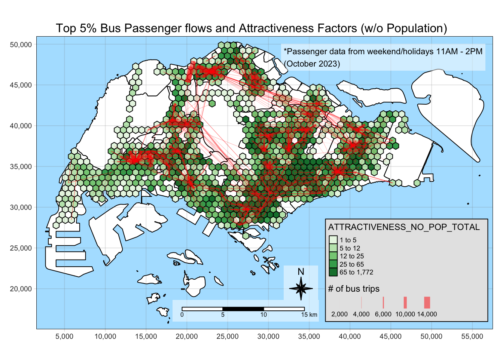
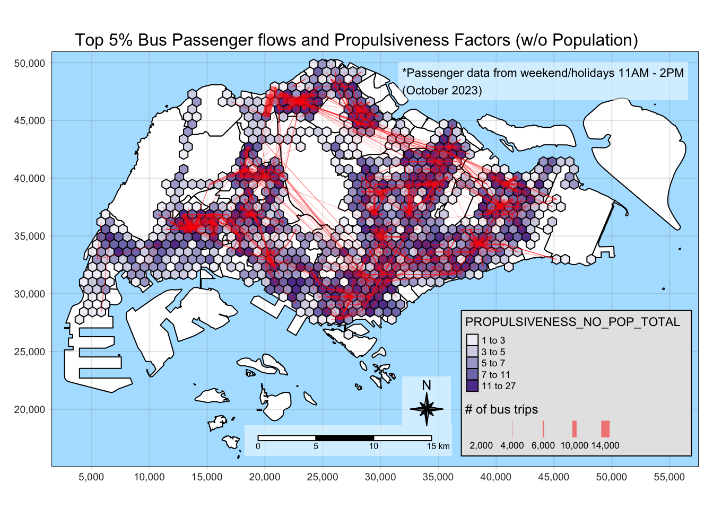
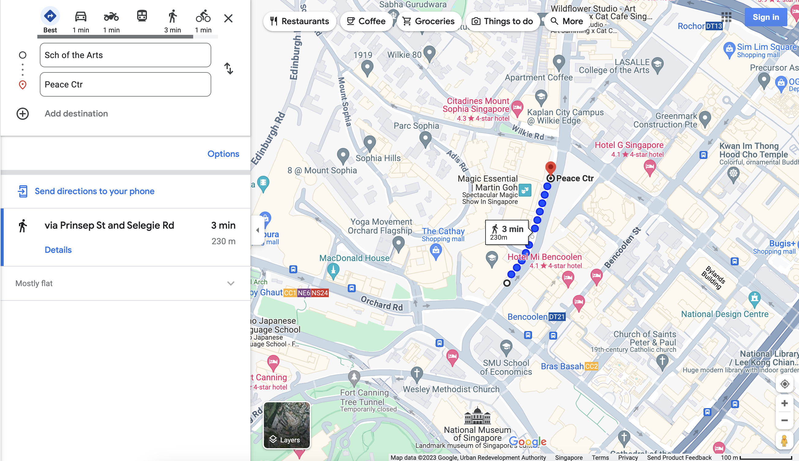

message <- "This code chunk executed"Take Home Exercise 2: A Case Study of Singapore Public Bus Commuter Flows
Overview
The aim of this exercise to study the bus commuter flow patterns in Singapore to gain insights that support decision-making.
We will be examining the weekend morning peak hours (11 AM - 2 PM) to figure out where people go during weekends and holidays.
We will also be the modelling the spatial interaction between the different locations in Singapore, related to the bus commuter patterns.
Check https://isss624-ay2023-24nov.netlify.app/take-home_ex02 for the full requirements of this exercise.
As this process is expected to have a lot of intermediate steps, Save, Load, and Data clear points are available to make our data wrangling more efficient.
Save point
This is where data is written as rds files using write_rds() for important data sets that will be used in later analysis. Examples are:
- Flow data, attractive and propulsive forces
- Critical outputs of expensive calculations
- Cleaned up data for lightweight processing
Load point
This is where data is loaded from rds files using read_rds(). They were previously generated by the save point.
TIP: Skip to the load points to progress without running the code above it
Data clear point
This is where data that will not be used anymore are cleared. The data in RStudio environment will pile up and set #| eval: false in code chunks if you want skip the clearing. For example, the code below won’t be run.
Setup
pacman::p_load(sf, sp, tmap, tidyverse, knitr, sfdep, stplanr, reshape2)
tmap_mode("plot")
tmap_style("natural")
set.seed(1234)Data Wrangling
Importing the Singapore subzone map
First, we will import the Master Plan 2019 Subzone Boundary (Web) data set that has been used in class. We will only keep the SUBZONE_N column and the geometry as we will only use this as the base for our visualizations.
mpsz <- st_read(dsn = "data/geospatial",
layer = "MPSZ-2019") %>%
select(SUBZONE_N)Reading layer `MPSZ-2019' from data source
`/Users/kjcpaas/Documents/Grad School/ISSS624/Project/ISSS624/Take-home_Ex2/data/geospatial'
using driver `ESRI Shapefile'
Simple feature collection with 332 features and 6 fields
Geometry type: MULTIPOLYGON
Dimension: XY
Bounding box: xmin: 103.6057 ymin: 1.158699 xmax: 104.0885 ymax: 1.470775
Geodetic CRS: WGS 84kable(head(mpsz))| SUBZONE_N | geometry |
|---|---|
| MARINA EAST | MULTIPOLYGON (((103.8802 1…. |
| INSTITUTION HILL | MULTIPOLYGON (((103.8376 1…. |
| ROBERTSON QUAY | MULTIPOLYGON (((103.8341 1…. |
| JURONG ISLAND AND BUKOM | MULTIPOLYGON (((103.7125 1…. |
| FORT CANNING | MULTIPOLYGON (((103.8472 1…. |
| MARINA EAST (MP) | MULTIPOLYGON (((103.8987 1…. |
Correcting the projection
Save point
Let’s save this geometry with corrected projection from plotting purposes.
write_rds(mpsz, "data/rds/mpsz.rds")Generating Hexagons for the Traffic Analysis Zone
To start our analysis, we will first build the honeycomb grid needed for our traffic analysis zone (TAZ). These hexagons must have a distance of 375m from the center of the hexagon to the midpoint of each edge.
Import Bus Stop Data
Next, we need to import the bus stop data as we will generate the honeycomb grid based on locations with bus stops.
busstops <- st_read(dsn = "data/geospatial",
layer = "BusStop")Reading layer `BusStop' from data source
`/Users/kjcpaas/Documents/Grad School/ISSS624/Project/ISSS624/Take-home_Ex2/data/geospatial'
using driver `ESRI Shapefile'
Simple feature collection with 5161 features and 3 fields
Geometry type: POINT
Dimension: XY
Bounding box: xmin: 3970.122 ymin: 26482.1 xmax: 48284.56 ymax: 52983.82
Projected CRS: SVY21kable(head(busstops))| BUS_STOP_N | BUS_ROOF_N | LOC_DESC | geometry |
|---|---|---|---|
| 22069 | B06 | OPP CEVA LOGISTICS | POINT (13576.31 32883.65) |
| 32071 | B23 | AFT TRACK 13 | POINT (13228.59 44206.38) |
| 44331 | B01 | BLK 239 | POINT (21045.1 40242.08) |
| 96081 | B05 | GRACE INDEPENDENT CH | POINT (41603.76 35413.11) |
| 11561 | B05 | BLK 166 | POINT (24568.74 30391.85) |
| 66191 | B03 | AFT CORFE PL | POINT (30951.58 38079.61) |
Correcting the projection
We want to use SVY21 as the projection for this study as it is the projection used for local Singaporean context.
After the import, it shows that the Projected CRSis SVY21. However, checking the CRS with st_crs() tells a different story.
st_crs(busstops)Coordinate Reference System:
User input: SVY21
wkt:
PROJCRS["SVY21",
BASEGEOGCRS["WGS 84",
DATUM["World Geodetic System 1984",
ELLIPSOID["WGS 84",6378137,298.257223563,
LENGTHUNIT["metre",1]],
ID["EPSG",6326]],
PRIMEM["Greenwich",0,
ANGLEUNIT["Degree",0.0174532925199433]]],
CONVERSION["unnamed",
METHOD["Transverse Mercator",
ID["EPSG",9807]],
PARAMETER["Latitude of natural origin",1.36666666666667,
ANGLEUNIT["Degree",0.0174532925199433],
ID["EPSG",8801]],
PARAMETER["Longitude of natural origin",103.833333333333,
ANGLEUNIT["Degree",0.0174532925199433],
ID["EPSG",8802]],
PARAMETER["Scale factor at natural origin",1,
SCALEUNIT["unity",1],
ID["EPSG",8805]],
PARAMETER["False easting",28001.642,
LENGTHUNIT["metre",1],
ID["EPSG",8806]],
PARAMETER["False northing",38744.572,
LENGTHUNIT["metre",1],
ID["EPSG",8807]]],
CS[Cartesian,2],
AXIS["(E)",east,
ORDER[1],
LENGTHUNIT["metre",1,
ID["EPSG",9001]]],
AXIS["(N)",north,
ORDER[2],
LENGTHUNIT["metre",1,
ID["EPSG",9001]]]]As we can see EPSG value is 9001, which correspond to WGS84. We have to fix the projection by transforming to EPSG value of 3414, which corresponds to SVY21.
busstops <- st_transform(busstops, crs = 3414)Show the code
tm_shape(mpsz) +
tm_polygons("lightgreen", title = "Singapore Boundary") +
tm_layout(main.title = "Map of bus stops in Singapore",
main.title.position = "center",
main.title.size = 1.0,
legend.height = 0.35,
legend.width = 0.35,
frame = TRUE) +
tm_shape(busstops) +
tm_dots(col = "red", size = 0.005, title = "Bus Stops") +
tm_compass(type="8star", size = 2) +
tm_scale_bar() +
tm_grid(alpha = 0.2)
busstops <- busstops %>% st_intersection(mpsz) %>% select(BUS_STOP_N, )Show the code
tmap_style("natural")
tm_shape(mpsz) +
tm_polygons("lightgreen", title = "Singapore Boundary") +
tm_layout(main.title = "Map of bus stops in Singapore",
main.title.position = "center",
main.title.size = 1.0,
legend.height = 0.35,
legend.width = 0.35,
frame = TRUE) +
tm_shape(busstops) +
tm_dots(col = "red", size = 0.005, title = "Bus Stops") +
tm_compass(type="8star", size = 2) +
tm_scale_bar() +
tm_grid(alpha = 0.2)
Removing the bus stops outside Singapore
The map shows that there are bus stops in our data set that are outside Singapore bounds (green area). We can remove these points from our busstops data by using st_intersection().
We will use this as busstops contains points, the intersection of the 2 geometries will generate points corresponding to the bus stops within Singapore.
We will also just retain the BUS_STOP_N to remove the columns we do not need.
busstops <- busstops %>% st_intersection(mpsz) %>% select(BUS_STOP_N, )Visualizing again, all the bus stops are now within Singapore.
Show the code
tmap_style("natural")
tm_shape(mpsz) +
tm_polygons("lightgreen", title = "Singapore Boundary") +
tm_layout(main.title = "Map of bus stops in Singapore",
main.title.position = "center",
main.title.size = 1.0,
legend.height = 0.35,
legend.width = 0.35,
frame = TRUE) +
tm_shape(busstops) +
tm_dots(col = "red", size = 0.005, title = "Bus Stops") +
tm_compass(type="8star", size = 2) +
tm_scale_bar() +
tm_grid(alpha = 0.2)
Creating the honeycomb grid
Finally, we can generate the honeycomb grid using st_make_grid(), providing cellsize of 750m.
Calculating cellsize
Apothem is defined as the perpendicular from the center of a regular polygon to one of the sides.
The specification is this study requires hexagons to be 375 m from the center of the hexagon to the center of one of it’s edge.

As such, this corresponds to the length of 2 opposite apothems, which is 750 m.
The edge length is not the same as apothem. It is 433.013 mm.
\[ 375m/cos(30) = 433.013m \]
honeycomb <- busstops %>% st_make_grid(cellsize = 750,
what="polygons",
square = FALSE) %>%
st_sf() %>%
filter(lengths(st_intersects(geometry, busstops)) > 0)
Code Explanation
- st_make_grid()
-
Creates a grid that covers the entire bus stop geometry, including areas without bus stop.
- st_sf()
-
Converts to simple feature data set
- st_intersects()
-
Checks if the hexagons have bus stops
- filter()
-
Removes hexagons without bus stops
Let’s plot the map to visually inspect if the hexagons cover all the bus stop locations.
Show the code
tm_shape(mpsz) +
tm_polygons("green", title = "Singapore Boundary", alpha = 0.5) +
tm_shape(honeycomb) +
tm_polygons(col = "white", title = "Hexagons", alpha = 1) +
tm_layout(main.title = "Honeycomb grid corresponding to Singapore bus stops",
main.title.position = "center",
main.title.size = 1.0,
legend.height = 0.35,
legend.width = 0.35,
frame = TRUE) +
tm_compass(type="8star", size = 2, bg.color = "white", bg.alpha = 0.5) +
tm_scale_bar(bg.color = "white", bg.alpha = 0.5) +
tm_shape(busstops) +
tm_dots(col = "red", size = 0.001, title = "Bus Stops") +
tm_grid(alpha = 0.2)
Assigning id to each hexagon
Now that we have hexagons properly generated, we will assign id for each hexagon to be used as a unique identifier. We will store this id under the HEX_ID column, and can be used in joining data frames.
honeycomb$HEX_ID <- sprintf("H%04d", seq_len(nrow(honeycomb))) %>% as.factor()
kable(head(honeycomb))| geometry | HEX_ID |
|---|---|
| POLYGON ((3970.122 27348.13… | H0001 |
| POLYGON ((4345.122 27997.65… | H0002 |
| POLYGON ((4345.122 30595.72… | H0003 |
| POLYGON ((4720.122 28647.16… | H0004 |
| POLYGON ((4720.122 29946.2,… | H0005 |
| POLYGON ((4720.122 31245.24… | H0006 |
Save point
Let’s save honeycomb as it contains the main geometry we will use in analysis.
write_rds(honeycomb, "data/rds/honeycomb.rds")Extracting hexagon-based bus commuter data
Next, we will extract the bus commuter data going from 1 hexagon to another.
Importing the bus commuter data
We will use the Passenger Volume By Origin Destination Bus Stops from LTA DataMall via API for the months of October 2023.
The data set is an aspatial data in csv format so we will use read_csv() to import the data.
odbus <- read_csv("data/aspatial/origin_destination_bus_202310.csv")
kable(head(odbus))| YEAR_MONTH | DAY_TYPE | TIME_PER_HOUR | PT_TYPE | ORIGIN_PT_CODE | DESTINATION_PT_CODE | TOTAL_TRIPS |
|---|---|---|---|---|---|---|
| 2023-10 | WEEKENDS/HOLIDAY | 16 | BUS | 04168 | 10051 | 3 |
| 2023-10 | WEEKDAY | 16 | BUS | 04168 | 10051 | 5 |
| 2023-10 | WEEKENDS/HOLIDAY | 14 | BUS | 80119 | 90079 | 3 |
| 2023-10 | WEEKDAY | 14 | BUS | 80119 | 90079 | 5 |
| 2023-10 | WEEKDAY | 17 | BUS | 44069 | 17229 | 4 |
| 2023-10 | WEEKENDS/HOLIDAY | 17 | BUS | 20281 | 20141 | 1 |
If you want to use data for the other months, just find and replace 202310 to your desired month in YYYYMM format.
Filtering the relevant data
We only need the data for the weekend morning peak period, which is from 11 AM - 2 PM on weekends and holidays. As such, we will filter the data for the relevant hours.
We will also rename the ORIGIN_PT_CODE and DESTINATION_PT_CODE to be consistent with the naming with busstops as these columns can be associated to busstops’s BUS_STOP_N
How to filter data by TIME_PER_HOUR
The TIME_PER_HOUR in data set covers the data from the start to the end of the hour in 24-hour format, i.e. when TIME_PER_HOUR = 16, this means bus taps from 4:00 PM ton4:59:59PM.
Hence, if we want to get 6 to 9am data, we will filter by:
TIME_PER_HOUR >= 6 & TIME_PER_HOUR < 9od_trips <- odbus %>%
filter(DAY_TYPE == "WEEKENDS/HOLIDAY") %>%
filter( TIME_PER_HOUR >= 11 &
TIME_PER_HOUR < 14
) %>%
group_by(ORIGIN_PT_CODE, DESTINATION_PT_CODE) %>%
summarise(TRIPS = sum(TOTAL_TRIPS)) %>%
rename(
ORIG_BUS_STOP_N = ORIGIN_PT_CODE,
DEST_BUS_STOP_N = DESTINATION_PT_CODE
)
kable(head(od_trips))| ORIG_BUS_STOP_N | DEST_BUS_STOP_N | TRIPS |
|---|---|---|
| 01012 | 01112 | 204 |
| 01012 | 01113 | 129 |
| 01012 | 01121 | 95 |
| 01012 | 01211 | 91 |
| 01012 | 01311 | 152 |
| 01012 | 01559 | 5 |
Data clear point
We do not need odbus anymore as we already extracted the data relevant to our analysis.
rm(odbus)Adding hexagon information to od_trips data
Generating lookup table for bus stop to associated hexagon
To connect the trip data to the their corresponding hexagon, we need to create a lookup table. This will serve as a glue in associating the aspatial od_trips data frame to the honeycomb data frame.
This can be done via st_intersection().
bs_hex <- st_intersection(busstops, honeycomb) %>%
st_drop_geometry() %>%
select(c(BUS_STOP_N, HEX_ID))
kable(head(bs_hex))| BUS_STOP_N | HEX_ID | |
|---|---|---|
| 3269 | 25059 | H0001 |
| 2570 | 25751 | H0002 |
| 254 | 26379 | H0003 |
| 2403 | 26369 | H0003 |
| 2829 | 25741 | H0004 |
| 1715 | 26399 | H0005 |
Joining od_trips and bs_hex
Next, we need to associate each origin bus stop and destination bus stop to their corresponding hexagons.
We can use that by doing inner_join() twice, once for the origin and another for the destination.
Why inner_join() instead of left_join()?
We will use inner_join as there are BUS_STOP_N values in od_trips data that are not in bs_hex.
c(
od_trips$ORIG_BUS_STOP_N[!(od_trips$ORIG_BUS_STOP_N %in% bs_hex$BUS_STOP_N)],
od_trips$DEST_BUS_STOP_N[!(od_trips$DEST_BUS_STOP_N %in% bs_hex$BUS_STOP_N)]
) %>% unique() %>% length()[1] 59There are 59 bus stops in od_trips that are not in bs_hex. 5 of these can be attributed the bus stops we removed due to them being out in Singapore. Others may be due to the BusStops data set not having complete information.
The proper way to handle this is to validate the existence of each of these bus stops and look at public sources (e.g. Google Maps, LTA data) and add coordinate data. However, as we do not have much to do this task, we have to remove these bus stops from our analysis as we do not have geospatial data to associate to the hexagons from the data sets available to us.
Therefore, we will use inner_join to keep only the observations in trips with the matching bus stops in bs_hex.
od_trips <- od_trips %>%
inner_join(bs_hex,
by = c("ORIG_BUS_STOP_N" = "BUS_STOP_N")) %>%
rename(ORIG_HEX_ID = HEX_ID)od_trips <- od_trips %>%
inner_join(bs_hex,
by = c("DEST_BUS_STOP_N" = "BUS_STOP_N")) %>%
rename(DEST_HEX_ID = HEX_ID)Aggregating data by hexagon
Similar to Filtering the relevant data, we will perform aggregations by ORIG_HEX_ID and DEST_HEX_ID to have an aggregated sum of trips by hexagon instead of bus stops.
od_hex <- od_trips %>%
group_by(ORIG_HEX_ID, DEST_HEX_ID) %>%
summarise(TRIPS = sum(TRIPS))
kable(head(od_hex))| ORIG_HEX_ID | DEST_HEX_ID | TRIPS |
|---|---|---|
| H0002 | H0016 | 1 |
| H0002 | H0017 | 2 |
| H0002 | H0032 | 16 |
| H0003 | H0005 | 1 |
| H0003 | H0022 | 56 |
| H0003 | H0028 | 10 |
Save point
Let’s save od_hex as it contains the data needed to visualize flow data. Take note that this includes intra-zonal trips.
write_rds(od_hex, "data/rds/od_hex202310.rds")
Data clear point
We do not need busstops, bs_hex, od_trips anymore as we already have the necessary data for doing hexagon-based analysis in od_hex.
rm(busstops)
rm(bs_hex)
rm(od_trips)Origin-Destination Flows
Load point
We can run from this point by loading these data.
mpsz <- read_rds("data/rds/mpsz.rds")
honeycomb <- read_rds("data/rds/honeycomb.rds")
od_hex <- read_rds("data/rds/od_hex202310.rds")The next part focuses on visualizing the bus commuter flows, figuring the potential propulsive and attractiveness variables.
Generating the flow lines
First, we will generate the flow lines using od2line(). honeycomb will be supplied as the zone as it contains the hexagons we are using as the traffic analysis zones.
flowlines <- od_hex %>% od2line(
honeycomb,
zone_code = "HEX_ID")Initial inspection of the flow lines
Next, we will do an initial inspection of the flow lines to check if they have been generated correctly.
Show the code
tm_shape(mpsz) +
tm_polygons("green", title = "Singapore Boundary", alpha = 0.5) +
tm_shape(honeycomb) +
tm_polygons(col = "white", title = "Hexagons", alpha = 1) +
tm_shape(flowlines) +
tm_lines(lwd = "TRIPS",
style = "quantile",
col = "red",
scale = c(0.1, 1, 3, 5, 7, 10),
title.lwd = "# of bus trips",
n = 6,
alpha = 0.8) +
tm_layout(main.title = "Bus Passenger flow for Weekends/Holidays 11 AM - 2PM (October 2023)",
main.title.position = "center",
main.title.size = 1.0,
legend.height = 0.35,
legend.width = 0.35,
frame = TRUE) +
tm_compass(type="8star", size = 2, bg.color = "white", bg.alpha = 0.5) +
tm_scale_bar(bg.color = "white", bg.alpha = 0.5) +
tm_grid(alpha = 0.2)
Insights
The flow lines are sparse at the West side of Singapore, the Jurong and Choa Chu Kang areas. This is consistent with the observations that we have in the Take-home Exercise 1 that these areas are least busy in terms of bus rides.
The busiest zones can be seen in this visualization as the zones where the lines converge. However, it is hard to see more closely in this web of lines we need a different visualization to inspect the busiest bus flows.
Visualizing the busiest flows
To visualize the busiest flows, we have to reduce the dataset into the most useful ones by:
Removing the intra-zonal flows, which may have come from passengers riding until the next stop only
Visualizing only the busiest flows
Helper function for removing intra-zonal data
To help in processing just the inter-zonal flows, we will create a helper function to remove the intra-zonal data. We only need to check if ORIG_HEX_ID is the same as DEST_HEX_ID.
This function uses filter() to remove the rows that do not satisfy the above condition.
remove_intra <- function(df) {
df %>% filter(
ORIG_HEX_ID != DEST_HEX_ID
)
}Determining the cut-off value for TRIPS
To identify the cut-off for our visualization, we will use summary() to check the distribution of the data
remove_intra(flowlines)$TRIPS %>% summary() Min. 1st Qu. Median Mean 3rd Qu. Max.
1.00 3.00 12.00 92.74 46.00 12377.00 As can be seen in the summary, the 3rd quartile is still very low compared to the visualization values in the flow line, which starts as 2000.
Let’s look at the distribution at from quantile() to find an appropriate cut-off value.
remove_intra(flowlines)$TRIPS %>%
quantile(probs = c(0.8, 0.9, 0.95, 0.99, 0.995, 0.999)) 80% 90% 95% 99% 99.5% 99.9%
66.000 171.000 376.250 1510.000 2422.625 5295.350 Visualizing the top 5% busiest flows
We will use the value for the 95th percentile as it removes much of the low traffic so we can see patterns. At the same time, it leaves enough so that important details are not lost.
Show the code
tm_shape(mpsz) +
tm_polygons("green", title = "Singapore Boundary", alpha = 0.5) +
tm_shape(honeycomb) +
tm_polygons(col = "white", title = "Hexagons", alpha = 1) +
tm_shape(
flowlines %>%
remove_intra() %>%
filter(TRIPS > 376)) +
tm_lines(lwd = "TRIPS",
style = "quantile",
col = "red",
scale = c(0.1, 1, 3, 5, 7, 10),
title.lwd = "# of bus trips",
n = 6,
alpha = 0.8) +
tm_layout(main.title = "Top 5% Bus Passenger Flow for Weekends/Holidays 11 AM - 2PM (October 2023)",
main.title.position = "center",
main.title.size = 1.0,
legend.height = 0.35,
legend.width = 0.35,
frame = TRUE) +
tm_compass(type="8star", size = 2, bg.color = "white", bg.alpha = 0.5) +
tm_scale_bar(bg.color = "white", bg.alpha = 0.5) +
tm_grid(alpha = 0.2)
Insights
It is notable that the thickest flow lines are for relatively short distances, like the bus rides to and from Woodlands Checkpoint to Kranji Station. We should consider the existence of train stations as attractive or propulsive variables. This can also be observed in some residential areas like Jurong East or Woodlands.
Also, there are longer bus rides for the weekend peak, probably indicating people more willing to travel longer distances for recreation and meeting family and friends.
Save point
Let’s save flowlines as it contains the flow data that we will be using in the next parts of the analysis
write_rds(flowlines, "data/rds/flowlines202310.rds")Attractiveness and Propulsiveness Variables
Possible motivations for riding the bus
Based on real-world knowledge and observations from Origin-Destination Flows, we will identify some possible motivations for people to ride the bus during weekend morning peak period. These are:
People leaving their homes to go to their destination
Transferring from train or another bus to reach their destination
Visiting Leisure, Entertainment, and F&B establishments for recreation
Going to shops for groceries and other errands
Visiting family and friends’ homes
With these motivations, we have the following propulsiveness and attractiveness variables.
Attractiveness variables are factors that can motivate people to go to their destinations. In our case, these are what motivates people to ride to their destination bus stop.
- Number of transport points (MRT exits and bus stops)
-
To transfer to another mode of transport to their final destination
- Population at the destination (HDB population)
-
To visit family and friends
- Number of retail outlets
-
For shopping and errands
- Number of leisure, recreation, entertainment areas
-
To unwind and spend time with family and friends
- Number of F&B outlets
-
For eating out, a basic human need and mode of socializing
Propulsiveness variables are factors that influence people to ride the bus from specific zones.
- Number of transport points (MRT exits and bus stops)
-
To transfer to another mode of transport to their final destination
- Population at the destination (HDB population)
-
To visit family and friends
Required data
To summarize, these are the list of data needed, and the data sources we will be using to derive the values for these variables.
Those with Notes have additional processing needed on top of just counting how many points intersect the hexagons.
Those already in the data/ directory are datasets provided or have peviously been used in class.
| Data | Source | Notes |
|---|---|---|
BUS_STOP_COUNT |
data/geospatial/BusStop.shp |
|
ENTERTN_COUNT |
data/geospatial/entertn.shp |
|
F_AND_B_COUNT |
data/geospatial/F&B.shp |
|
HDB_COUNT / HDB_DWELLING_COUNT |
data/aspatial/hdb.csv |
These will serve as population proxies |
LEISURE_COUNT |
data/geospatial/Liesure&Recreation.shp |
|
RETAIL_COUNT |
data/geospatial/Retails.shp |
|
TRAIN_EXITS_COUNT |
Train Station Exit dataset from LTA DataMall | Need to download from LTA DataMall |
Preparing variable data
Load point
We can run from this point by loading these data.
mpsz <- read_rds("data/rds/mpsz.rds")
honeycomb <- read_rds("data/rds/honeycomb.rds")
flowlines <- read_rds("data/rds/flowlines202310.rds")We also need to define the remove_intra() as we are removing the intra_zonal flows from our visualization.
remove_intra <- function(df) {
df %>% filter(
ORIG_HEX_ID != DEST_HEX_ID
)
}We will store the variable in a single sf object derived from honeycomb.
var_hc <- honeycombWe will then prepare the variables, starting with those that don’t need extra processing. We will use a combination of lengths() and st_intersects() to determine how many of each establishment type are in each hexagon.
We are using the same steps to import the bus stop data set from Import Bus Stop Data.
var_hc$BUS_STOP_COUNT <- lengths(
st_intersects(var_hc,
st_read(dsn = "data/geospatial",
layer = "BusStop") %>%
st_transform(crs = 3414)))Reading layer `BusStop' from data source
`/Users/kjcpaas/Documents/Grad School/ISSS624/Project/ISSS624/Take-home_Ex2/data/geospatial'
using driver `ESRI Shapefile'
Simple feature collection with 5161 features and 3 fields
Geometry type: POINT
Dimension: XY
Bounding box: xmin: 3970.122 ymin: 26482.1 xmax: 48284.56 ymax: 52983.82
Projected CRS: SVY21entertn <- st_read(dsn = "data/geospatial", layer = "entertn")Reading layer `entertn' from data source
`/Users/kjcpaas/Documents/Grad School/ISSS624/Project/ISSS624/Take-home_Ex2/data/geospatial'
using driver `ESRI Shapefile'
Simple feature collection with 114 features and 3 fields
Geometry type: POINT
Dimension: XY
Bounding box: xmin: 10809.34 ymin: 26528.63 xmax: 41600.62 ymax: 46375.77
Projected CRS: SVY21 / Singapore TM
Visual Inspection
As we haven’t used this dataset before, we will do a quick visual inspection to check if the points are within Singapore.
Show the code
tm_shape(mpsz) +
tm_polygons("green", title = "Singapore Boundary", alpha = 0.5) +
tm_shape(honeycomb) +
tm_polygons(col = "white", title = "Hexagons", alpha = 1) +
tm_layout(main.title = "Map of Entertainment Spots in Singapore",
main.title.position = "center",
main.title.size = 1.0,
legend.height = 0.35,
legend.width = 0.35,
frame = TRUE) +
tm_compass(type="8star", size = 2, bg.color = "white", bg.alpha = 0.5) +
tm_scale_bar(bg.color = "white", bg.alpha = 0.5) +
tm_shape(entertn) +
tm_dots(col = "red", size = 0.005, title = "Entertainment Spots") +
tm_grid(alpha = 0.2)
var_hc$ENTERTN_COUNT <- lengths(st_intersects(var_hc, entertn))f_and_b <- st_read(dsn = "data/geospatial", layer = "F&B")Reading layer `F&B' from data source
`/Users/kjcpaas/Documents/Grad School/ISSS624/Project/ISSS624/Take-home_Ex2/data/geospatial'
using driver `ESRI Shapefile'
Simple feature collection with 1919 features and 3 fields
Geometry type: POINT
Dimension: XY
Bounding box: xmin: 6010.495 ymin: 25343.27 xmax: 45462.43 ymax: 48796.21
Projected CRS: SVY21 / Singapore TM
Visual Inspection
As we haven’t used this dataset before, we will do a quick visual inspection to check if the points are within Singapore.
Show the code
tm_shape(mpsz) +
tm_polygons("green", title = "Singapore Boundary", alpha = 0.5) +
tm_shape(honeycomb) +
tm_polygons(col = "white", title = "Hexagons", alpha = 1) +
tm_layout(main.title = "Map of F&B Establishments in Singapore",
main.title.position = "center",
main.title.size = 1.0,
legend.height = 0.35,
legend.width = 0.35,
frame = TRUE) +
tm_compass(type="8star", size = 2, bg.color = "white", bg.alpha = 0.5) +
tm_scale_bar(bg.color = "white", bg.alpha = 0.5) +
tm_shape(f_and_b) +
tm_dots(col = "red", size = 0.005, title = "F&B Establishments Spots") +
tm_grid(alpha = 0.2)
var_hc$F_AND_B_COUNT <- lengths(st_intersects(var_hc, f_and_b))leis_rec <- st_read(dsn = "data/geospatial", layer = "Liesure&Recreation")Reading layer `Liesure&Recreation' from data source
`/Users/kjcpaas/Documents/Grad School/ISSS624/Project/ISSS624/Take-home_Ex2/data/geospatial'
using driver `ESRI Shapefile'
Simple feature collection with 1217 features and 30 fields
Geometry type: POINT
Dimension: XY
Bounding box: xmin: 6010.495 ymin: 25134.28 xmax: 48439.77 ymax: 50078.88
Projected CRS: SVY21 / Singapore TM
Visual Inspection
As we haven’t used this dataset before, we will do a quick visual inspection to check if the points are within Singapore.
Show the code
tm_shape(mpsz) +
tm_polygons("green", title = "Singapore Boundary", alpha = 0.5) +
tm_shape(honeycomb) +
tm_polygons(col = "white", title = "Hexagons", alpha = 1) +
tm_layout(main.title = "Map of Leisure & Recreation Spots in Singapore",
main.title.position = "center",
main.title.size = 1.0,
legend.height = 0.35,
legend.width = 0.35,
frame = TRUE) +
tm_compass(type="8star", size = 2, bg.color = "white", bg.alpha = 0.5) +
tm_scale_bar(bg.color = "white", bg.alpha = 0.5) +
tm_shape(leis_rec) +
tm_dots(col = "red", size = 0.005, title = "Leisure & Recreation Spots") +
tm_grid(alpha = 0.2)
var_hc$LEISURE_COUNT <- lengths(st_intersects(var_hc, leis_rec))retail <- st_read(dsn = "data/geospatial", layer = "Retails")Reading layer `Retails' from data source
`/Users/kjcpaas/Documents/Grad School/ISSS624/Project/ISSS624/Take-home_Ex2/data/geospatial'
using driver `ESRI Shapefile'
Simple feature collection with 37635 features and 3 fields
Geometry type: POINT
Dimension: XY
Bounding box: xmin: 4737.982 ymin: 25171.88 xmax: 48265.04 ymax: 50135.28
Projected CRS: SVY21 / Singapore TM
Visual Inspection
As we haven’t used this dataset before, we will do a quick visual inspection to check if the points are within Singapore.
Show the code
tm_shape(mpsz) +
tm_polygons("green", title = "Singapore Boundary", alpha = 0.5) +
tm_shape(honeycomb) +
tm_polygons(col = "white", title = "Hexagons", alpha = 1) +
tm_layout(main.title = "Map of Retail Outlets in Singapore",
main.title.position = "center",
main.title.size = 1.0,
legend.height = 0.35,
legend.width = 0.35,
frame = TRUE) +
tm_compass(type="8star", size = 2, bg.color = "white", bg.alpha = 0.5) +
tm_scale_bar(bg.color = "white", bg.alpha = 0.5) +
tm_shape(retail) +
tm_dots(col = "red", size = 0.005, title = "Retail Outlets") +
tm_grid(alpha = 0.2)
var_hc$RETAIL_COUNT <- lengths(st_intersects(var_hc, retail))We now have the variables in var_hc.
kable(head(var_hc))| geometry | HEX_ID | BUS_STOP_COUNT | ENTERTN_COUNT | F_AND_B_COUNT | LEISURE_COUNT | RETAIL_COUNT |
|---|---|---|---|---|---|---|
| POLYGON ((3970.122 27348.13… | H0001 | 1 | 0 | 0 | 0 | 0 |
| POLYGON ((4345.122 27997.65… | H0002 | 1 | 0 | 0 | 0 | 0 |
| POLYGON ((4345.122 30595.72… | H0003 | 2 | 0 | 0 | 0 | 0 |
| POLYGON ((4720.122 28647.16… | H0004 | 1 | 0 | 0 | 0 | 0 |
| POLYGON ((4720.122 29946.2,… | H0005 | 4 | 0 | 0 | 0 | 5 |
| POLYGON ((4720.122 31245.24… | H0006 | 1 | 0 | 0 | 0 | 0 |
Now, we will process the other variables that need additional processing.
Train Station Exits
We will download the Train Station Exit Point from LTA DataMall. This is a geospatial shp file so we can import it the same way as the previous datasets.
train_exits <- st_read(dsn = "data/geospatial", layer = "Train_Station_Exit_Layer")Reading layer `Train_Station_Exit_Layer' from data source
`/Users/kjcpaas/Documents/Grad School/ISSS624/Project/ISSS624/Take-home_Ex2/data/geospatial'
using driver `ESRI Shapefile'
Simple feature collection with 565 features and 2 fields
Geometry type: POINT
Dimension: XY
Bounding box: xmin: 6134.086 ymin: 27499.7 xmax: 45356.36 ymax: 47865.92
Projected CRS: SVY21
Correcting the projection
We want to use SVY21 as the projection for this study as it is the projection used for local Singaporean context.
After the import, it shows that the Projected CRSis SVY21. However, checking the CRS with st_crs() tells a different story.
st_crs(train_exits)Coordinate Reference System:
User input: SVY21
wkt:
PROJCRS["SVY21",
BASEGEOGCRS["WGS 84",
DATUM["World Geodetic System 1984",
ELLIPSOID["WGS 84",6378137,298.257223563,
LENGTHUNIT["metre",1]],
ID["EPSG",6326]],
PRIMEM["Greenwich",0,
ANGLEUNIT["Degree",0.0174532925199433]]],
CONVERSION["unnamed",
METHOD["Transverse Mercator",
ID["EPSG",9807]],
PARAMETER["Latitude of natural origin",1.36666666666667,
ANGLEUNIT["Degree",0.0174532925199433],
ID["EPSG",8801]],
PARAMETER["Longitude of natural origin",103.833333333333,
ANGLEUNIT["Degree",0.0174532925199433],
ID["EPSG",8802]],
PARAMETER["Scale factor at natural origin",1,
SCALEUNIT["unity",1],
ID["EPSG",8805]],
PARAMETER["False easting",28001.642,
LENGTHUNIT["metre",1],
ID["EPSG",8806]],
PARAMETER["False northing",38744.572,
LENGTHUNIT["metre",1],
ID["EPSG",8807]]],
CS[Cartesian,2],
AXIS["(E)",east,
ORDER[1],
LENGTHUNIT["metre",1,
ID["EPSG",9001]]],
AXIS["(N)",north,
ORDER[2],
LENGTHUNIT["metre",1,
ID["EPSG",9001]]]]As we can see EPSG value is 9001, which correspond to WGS84. We have to fix the projection by transforming to EPSG value of 3414, which corresponds to SVY21.
train_exits <- st_transform(train_exits, crs = 3414)Visual inspection
As we haven’t used this dataset before, we will do a quick visual inspection to check if the points are within Singapore.
Show the code
tm_shape(mpsz) +
tm_polygons("green", title = "Singapore Boundary", alpha = 0.5) +
tm_shape(honeycomb) +
tm_polygons(col = "white", title = "Hexagons", alpha = 1) +
tm_layout(main.title = "Map of Train Station Exits in Singapore",
main.title.position = "center",
main.title.size = 1.0,
legend.height = 0.35,
legend.width = 0.35,
frame = TRUE) +
tm_compass(type="8star", size = 2, bg.color = "white", bg.alpha = 0.5) +
tm_scale_bar(bg.color = "white", bg.alpha = 0.5) +
tm_shape(train_exits) +
tm_dots(col = "red", size = 0.005, title = "Train Station Exits") +
tm_grid(alpha = 0.2)
var_hc$TRAIN_EXITS_COUNT <- lengths(st_intersects(var_hc, train_exits))
Data clear point
We do not need the data used to read the shp contents anymore as we have already derived the variables from them.
rm(busstops)
rm(entertn)
rm(f_and_b)
rm(leis_rec)
rm(retail)
rm(train_exits)HDB Population
Next, we will derive the population data for each zone. We will use aspatial dataset provided, hdb.csv.
Importing the data
We will first import the aspatial hdb.csv.
hdb_csv <- read_csv("data/aspatial/hdb.csv")
kable(head(hdb_csv))| …1 | blk_no | street | max_floor_lvl | year_completed | residential | commercial | market_hawker | miscellaneous | multistorey_carpark | precinct_pavilion | bldg_contract_town | total_dwelling_units | 1room_sold | 2room_sold | 3room_sold | 4room_sold | 5room_sold | exec_sold | multigen_sold | studio_apartment_sold | 1room_rental | 2room_rental | 3room_rental | other_room_rental | lat | lng | building | addr | postal | SUBZONE_NO | SUBZONE_N | SUBZONE_C | PLN_AREA_N | PLN_AREA_C | REGION_N | REGION_C |
|---|---|---|---|---|---|---|---|---|---|---|---|---|---|---|---|---|---|---|---|---|---|---|---|---|---|---|---|---|---|---|---|---|---|---|---|---|
| 0 | 1 | BEACH RD | 16 | 1970 | Y | Y | N | N | N | N | KWN | 142 | 0 | 1 | 138 | 1 | 2 | 0 | 0 | 0 | 0 | 0 | 0 | 0 | 1.295097 | 103.8541 | RAFFLES HOTEL | 1 BEACH ROAD RAFFLES HOTEL SINGAPORE 189673 | 189673 | 2 | CITY HALL | DTSZ02 | DOWNTOWN CORE | DT | CENTRAL REGION | CR |
| 1 | 1 | BEDOK STH AVE 1 | 14 | 1975 | Y | N | N | Y | N | N | BD | 206 | 0 | 0 | 204 | 0 | 2 | 0 | 0 | 0 | 0 | 0 | 0 | 0 | 1.320852 | 103.9337 | NIL | 1 BEDOK SOUTH AVENUE 1 SINGAPORE 460001 | 460001 | 6 | BEDOK SOUTH | BDSZ06 | BEDOK | BD | EAST REGION | ER |
| 2 | 1 | CANTONMENT RD | 2 | 2010 | N | Y | N | N | N | N | CT | 0 | 0 | 0 | 0 | 0 | 0 | 0 | 0 | 0 | 0 | 0 | 0 | 0 | 1.275488 | 103.8414 | PINNACLE @ DUXTON | 1 CANTONMENT ROAD PINNACLE @ DUXTON SINGAPORE 080001 | 080001 | 3 | CHINATOWN | OTSZ03 | OUTRAM | OT | CENTRAL REGION | CR |
| 3 | 1 | CHAI CHEE RD | 15 | 1982 | Y | N | N | N | N | N | BD | 102 | 0 | 0 | 0 | 10 | 92 | 0 | 0 | 0 | 0 | 0 | 0 | 0 | 1.327969 | 103.9227 | PING YI GARDENS | 1 CHAI CHEE ROAD PING YI GARDENS SINGAPORE 461001 | 461001 | 3 | KEMBANGAN | BDSZ03 | BEDOK | BD | EAST REGION | ER |
| 4 | 1 | CHANGI VILLAGE RD | 4 | 1975 | Y | Y | N | N | N | N | PRC | 55 | 0 | 0 | 54 | 0 | 1 | 0 | 0 | 0 | 0 | 0 | 0 | 0 | 1.388610 | 103.9881 | OCBC CHANGI VILLAGE ROAD - 7 ELEVEN | 1 CHANGI VILLAGE ROAD OCBC CHANGI VILLAGE ROAD - 7 ELEVEN SINGAPORE 500001 | 500001 | 1 | CHANGI POINT | CHSZ01 | CHANGI | CH | EAST REGION | ER |
| 5 | 1 | DELTA AVE | 25 | 1982 | Y | N | N | N | N | N | BM | 96 | 0 | 0 | 0 | 0 | 96 | 0 | 0 | 0 | 0 | 0 | 0 | 0 | 1.292075 | 103.8286 | NIL | 1 DELTA AVENUE SINGAPORE 160001 | 160001 | 9 | BUKIT HO SWEE | BMSZ09 | BUKIT MERAH | BM | CENTRAL REGION | CR |
We will first convert this to a sf data type, which uses WGS 84 and transform it to SVY21.
hdb_sf <- hdb_csv %>% st_as_sf(coords = c("lng", "lat"),
crs = 4326) %>%
st_transform(crs = 3414)
Visual inspection
As we haven’t used this dataset before, we will do a quick visual inspection to check if the points are within Singapore.
Show the code
tm_shape(mpsz) +
tm_polygons("green", title = "Singapore Boundary", alpha = 0.5) +
tm_shape(honeycomb) +
tm_polygons(col = "white", title = "Hexagons", alpha = 1) +
tm_layout(main.title = "Map of HDB Blocks in Singapore",
main.title.position = "center",
main.title.size = 1.0,
legend.height = 0.35,
legend.width = 0.35,
frame = TRUE) +
tm_compass(type="8star", size = 2, bg.color = "white", bg.alpha = 0.5) +
tm_scale_bar(bg.color = "white", bg.alpha = 0.5) +
tm_shape(hdb_sf) +
tm_dots(col = "red", size = 0.001, title = "HDB Blocks") +
tm_grid(alpha = 0.2)
On the HDB-related variables
We will not have an accurate number for the population for each zone as we have incomplete data of residents in each zone. We have to account for other housing options like private residents, dormitories, etc.
For this study, we will use both the number of HDB per zone and the number of dwellings in each zone as a population proxy.
Removing unnecessary data
Now that we have inspected the the data contents, we can proceed with trimming out the unnecessary elements. We will only retain the residential blocks (there are commercial and market blocks without residents), the total_dwelling_units column, and lastly, the geometry.
hdb_filtered_sf <- hdb_sf %>%
filter(residential == "Y") %>%
select(total_dwelling_units)Adding HDB_COUNT
This variable will contain the number of HDB blocks in a zone. We will use the same methods to count the number locations in the zone, by using lengths() and st_intersects().
# TODO: Remove if this is unnecessary after all
var_hc$HDB_COUNT <- lengths(st_intersects(var_hc, hdb_filtered_sf))Adding HDB_DWELLING_COUNT
While HDB_COUNT can be a good population proxy, we need to consider that HDB blocks have different sizes. For example, taller and wider blocks may have more units compared to shorter blocks.
As such, we will use total_dwelling_units to improve our population proxy.
We need to aggregate the sum of total_dwelling_units per hexagon, and doing a left_join() with var_hc.
var_hc <- var_hc %>%
left_join(
st_intersection(hdb_filtered_sf, var_hc) %>%
st_drop_geometry() %>%
group_by(HEX_ID) %>%
summarize(HDB_DWELLING_COUNT = sum(total_dwelling_units))
)
var_hc$HDB_DWELLING_COUNT[is.na(var_hc$HDB_DWELLING_COUNT)] <- 0
kable(head(var_hc))| HEX_ID | BUS_STOP_COUNT | ENTERTN_COUNT | F_AND_B_COUNT | LEISURE_COUNT | RETAIL_COUNT | TRAIN_EXITS_COUNT | HDB_COUNT | HDB_DWELLING_COUNT | geometry |
|---|---|---|---|---|---|---|---|---|---|
| H0001 | 1 | 0 | 0 | 0 | 0 | 0 | 0 | 0 | POLYGON ((3970.122 27348.13… |
| H0002 | 1 | 0 | 0 | 0 | 0 | 0 | 0 | 0 | POLYGON ((4345.122 27997.65… |
| H0003 | 2 | 0 | 0 | 0 | 0 | 0 | 0 | 0 | POLYGON ((4345.122 30595.72… |
| H0004 | 1 | 0 | 0 | 0 | 0 | 0 | 0 | 0 | POLYGON ((4720.122 28647.16… |
| H0005 | 4 | 0 | 0 | 0 | 5 | 0 | 0 | 0 | POLYGON ((4720.122 29946.2,… |
| H0006 | 1 | 0 | 0 | 0 | 0 | 0 | 0 | 0 | POLYGON ((4720.122 31245.24… |
According to the 2022 official statistics from Department of Statistics, the average household size is 3.09 person.
While we can multiply the number of dwellings with this number to estimate the number of residents per zone, it is wise to stop at HDB_DWELLING_COUNT as the other variables all represent the number of a location type per zone. If we have a variable with a different unit, i.e. persons, the simulations may not give us the expected results.
Data clear point
We do not need the intermediate data used to derive the HDB-based variables so we can remove them from the environment.
rm(hdb_csv)
rm(hdb_sf)
rm(hdb_filtered_sf)Visualizing the attractiveness and propulsiveness variables
Next, we will visualize the Attractiveness and Propulsiveness Variables with the flowline, to check if the busiest bus flows correspond to these factors we identified.
To simplify the visualization, we will add the counts for the different variables. We will do this by using mutate() to generate the sums.
Why we need to generate totals without the population proxy
When we do a summary of the variable values, we can see that HDB_DWELLING_COUNT is higher than the other variable values.
kable(summary(var_hc))| HEX_ID | BUS_STOP_COUNT | ENTERTN_COUNT | F_AND_B_COUNT | LEISURE_COUNT | RETAIL_COUNT | TRAIN_EXITS_COUNT | HDB_COUNT | HDB_DWELLING_COUNT | geometry | |
|---|---|---|---|---|---|---|---|---|---|---|
| H0001 : 1 | Min. : 1.000 | Min. :0.0000 | Min. : 0.000 | Min. : 0.000 | Min. : 0.0 | Min. : 0.0000 | Min. : 0.00 | Min. : 0 | POLYGON :831 | |
| H0002 : 1 | 1st Qu.: 3.000 | 1st Qu.:0.0000 | 1st Qu.: 0.000 | 1st Qu.: 0.000 | 1st Qu.: 1.0 | 1st Qu.: 0.0000 | 1st Qu.: 0.00 | 1st Qu.: 0 | epsg:3414 : 0 | |
| H0003 : 1 | Median : 6.000 | Median :0.0000 | Median : 0.000 | Median : 0.000 | Median : 8.0 | Median : 0.0000 | Median : 0.00 | Median : 0 | +proj=tmer…: 0 | |
| H0004 : 1 | Mean : 6.205 | Mean :0.1336 | Mean : 2.212 | Mean : 1.312 | Mean : 44.2 | Mean : 0.6739 | Mean :12.19 | Mean :1306 | NA | |
| H0005 : 1 | 3rd Qu.: 9.000 | 3rd Qu.:0.0000 | 3rd Qu.: 1.000 | 3rd Qu.: 1.000 | 3rd Qu.: 37.0 | 3rd Qu.: 0.0000 | 3rd Qu.:22.00 | 3rd Qu.:2272 | NA | |
| H0006 : 1 | Max. :19.000 | Max. :9.0000 | Max. :133.000 | Max. :41.000 | Max. :1678.0 | Max. :13.0000 | Max. :82.00 | Max. :7946 | NA | |
| (Other):825 | NA | NA | NA | NA | NA | NA | NA | NA | NA |
If we visualize the factors, we won’t be able to see the influence of the other factors to the flows.
var_totals_hc <- var_hc
var_totals_hc <- var_totals_hc %>%
mutate(ATTRACTIVENESS_TOTAL =
BUS_STOP_COUNT + TRAIN_EXITS_COUNT +
HDB_DWELLING_COUNT +
RETAIL_COUNT +
LEISURE_COUNT +
ENTERTN_COUNT +
F_AND_B_COUNT) %>%
mutate(ATTRACTIVENESS_NO_POP_TOTAL =
BUS_STOP_COUNT + TRAIN_EXITS_COUNT +
RETAIL_COUNT +
LEISURE_COUNT +
ENTERTN_COUNT +
F_AND_B_COUNT) %>%
mutate(PROPULSIVENESS_TOTAL =
BUS_STOP_COUNT + TRAIN_EXITS_COUNT +
HDB_DWELLING_COUNT) %>%
mutate(PROPULSIVENESS_NO_POP_TOTAL =
BUS_STOP_COUNT + TRAIN_EXITS_COUNT) %>%
select(HEX_ID,
ATTRACTIVENESS_TOTAL,
ATTRACTIVENESS_NO_POP_TOTAL,
PROPULSIVENESS_TOTAL,
PROPULSIVENESS_NO_POP_TOTAL)
kable(head(var_totals_hc))| HEX_ID | ATTRACTIVENESS_TOTAL | ATTRACTIVENESS_NO_POP_TOTAL | PROPULSIVENESS_TOTAL | PROPULSIVENESS_NO_POP_TOTAL | geometry |
|---|---|---|---|---|---|
| H0001 | 1 | 1 | 1 | 1 | POLYGON ((3970.122 27348.13… |
| H0002 | 1 | 1 | 1 | 1 | POLYGON ((4345.122 27997.65… |
| H0003 | 2 | 2 | 2 | 2 | POLYGON ((4345.122 30595.72… |
| H0004 | 1 | 1 | 1 | 1 | POLYGON ((4720.122 28647.16… |
| H0005 | 9 | 9 | 4 | 4 | POLYGON ((4720.122 29946.2,… |
| H0006 | 1 | 1 | 1 | 1 | POLYGON ((4720.122 31245.24… |
Visualizing all variables
Show the code
tm_shape(mpsz) +
tm_polygons("white", title = "Singapore Boundary") +
tm_shape(var_totals_hc) +
tm_polygons("ATTRACTIVENESS_TOTAL", palette = "Greens", style = "quantile") +
tm_shape(
flowlines %>%
remove_intra() %>%
filter(TRIPS > 376)) +
tm_lines(lwd = "TRIPS",
style = "quantile",
col = "red",
scale = c(0.1, 1, 3, 5, 7, 10),
title.lwd = "# of bus trips",
n = 6,
alpha = 0.5) +
tm_layout(main.title = "Top 5% Bus Passenger flows and Attractiveness Factors",
main.title.position = "center",
main.title.size = 1.0,
legend.height = 0.35,
legend.width = 0.35,
frame = TRUE) +
tm_compass(type="8star", size = 2, bg.color = "white", bg.alpha = 0.5) +
tm_scale_bar(bg.color = "white", bg.alpha = 0.5) +
tm_grid(alpha = 0.2) +
tm_credits("*Passenger data from weekend/holidays 11AM - 2PM\n(October 2023)",
bg.color = "white", bg.alpha = 0.5,
position = c("right", "top"))
Show the code
tm_shape(mpsz) +
tm_polygons("white", title = "Singapore Boundary") +
tm_shape(var_totals_hc) +
tm_polygons("PROPULSIVENESS_TOTAL", palette = "Purples", style = "quantile") +
tm_shape(
flowlines %>%
remove_intra() %>%
filter(TRIPS > 376)) +
tm_lines(lwd = "TRIPS",
style = "quantile",
col = "red",
scale = c(0.1, 1, 3, 5, 7, 10),
title.lwd = "# of bus trips",
n = 6,
alpha = 0.5) +
tm_layout(main.title = "Top 5% Bus Passenger flows and Propulsiveness Factors",
main.title.position = "center",
main.title.size = 1.0,
legend.height = 0.35,
legend.width = 0.35,
frame = TRUE) +
tm_compass(type="8star", size = 2, bg.color = "white", bg.alpha = 0.5) +
tm_scale_bar(bg.color = "white", bg.alpha = 0.5) +
tm_grid(alpha = 0.2) +
tm_credits("*Passenger data from weekend/holidays 11AM - 2PM\n(October 2023)",
bg.color = "white", bg.alpha = 0.5,
position = c("right", "top"))
Insights
The maps have similar patterns on the attractiveness and propulsiveness factors. This is to be expected as these values are heavily influenced by HDB_DWELLINGS_COUNT.
The zones with high attractiveness and propulsiveness correspond the popular intersections of the flowlines. This indicates that there is high usage of buses in residential areas.
However, we are not clear on whether passengers board or alight the buses more in residential hubs at this point in time. A flow analysis will help us gain further insights on this matter.
Visualizing without population
Now, we will plot the maps of the attractiveness and propulsiveness factors without HDB_DWELLING_COUNT to see the effects of the factors we identified, without the population factor.
Show the code
tm_shape(mpsz) +
tm_polygons("white", title = "Singapore Boundary") +
tm_shape(var_totals_hc) +
tm_polygons("ATTRACTIVENESS_NO_POP_TOTAL", palette = "Greens", style = "quantile") +
tm_shape(
flowlines %>%
remove_intra() %>%
filter(TRIPS > 376)) +
tm_lines(lwd = "TRIPS",
style = "quantile",
col = "red",
scale = c(0.1, 1, 3, 5, 7, 10),
title.lwd = "# of bus trips",
n = 6,
alpha = 0.5) +
tm_layout(main.title = "Top 5% Bus Passenger flows and Attractiveness Factors (w/o Population)",
main.title.position = "center",
main.title.size = 1.0,
legend.height = 0.35,
legend.width = 0.35,
frame = TRUE) +
tm_compass(type="8star", size = 2, bg.color = "white", bg.alpha = 0.5) +
tm_scale_bar(bg.color = "white", bg.alpha = 0.5) +
tm_grid(alpha = 0.2) +
tm_credits("*Passenger data from weekend/holidays 11AM - 2PM\n(October 2023)",
bg.color = "white", bg.alpha = 0.5,
position = c("right", "top"))
Show the code
tm_shape(mpsz) +
tm_polygons("white", title = "Singapore Boundary") +
tm_shape(var_totals_hc) +
tm_polygons("PROPULSIVENESS_NO_POP_TOTAL", palette = "Purples", style = "quantile") +
tm_shape(
flowlines %>%
remove_intra() %>%
filter(TRIPS > 376)) +
tm_lines(lwd = "TRIPS",
style = "quantile",
col = "red",
scale = c(0.1, 1, 3, 5, 7, 10),
title.lwd = "# of bus trips",
n = 6,
alpha = 0.5) +
tm_layout(main.title = "Top 5% Bus Passenger flows and Propulsiveness Factors (w/o Population)",
main.title.position = "center",
main.title.size = 1.0,
legend.height = 0.35,
legend.width = 0.35,
frame = TRUE) +
tm_compass(type="8star", size = 2, bg.color = "white", bg.alpha = 0.5) +
tm_scale_bar(bg.color = "white", bg.alpha = 0.5) +
tm_grid(alpha = 0.2) +
tm_credits("*Passenger data from weekend/holidays 11AM - 2PM\n(October 2023)",
bg.color = "white", bg.alpha = 0.5,
position = c("right", "top"))
Insights
Compared to the plots that include HDB_DWELLING_COUNT, the flows match the attractiveness and propulsiveness maps less.
We need to consider that we simplified the visualizations by adding all the variables so details like the effect of each location type in bus ridership are loss, especially on the attractiveness map, as we have more variables.
The propulsiveness map correspond to the flow lines better, but that is because we include the bus stops, which are the origin and destinations of our data set.
Once we model the flows, we can better see the effects of the individual variables, e.g. TRAIN_EXITS_COUNT, RETAIL_COUNT.
We must also consider that we visualized only the top 5% of TRIPS count, so if there are zones with passengers from multiple bus stops, they will not show up. For example, 1000 trips coming from a single bus stop will show up but 100 trips from 10 different bus stops won’t show up.
Another thing of note is that the busiest pair, which is from Kranji to Woodlands Checkpoint do not correspond strongly with the attractiveness and propulsiveness factors we defined. We may need details like passengers alighting from train stations as a propulsiveness variable, and add international access as attractiveness variable.
Data clear point
We do not need var_totals_hc anymore so we can remove it. Also, as we are done with the flow visualizations, we also can remove flowlines
rm(var_totals_hc)
rm(flowlines)Preparing modelling data
Load point
We can run from this point by loading these data.
honeycomb <- read_rds("data/rds/honeycomb.rds")
od_hex <- read_rds("data/rds/od_hex202310.rds")We also need to define the remove_intra() as we are removing the intra_zonal flows from our visualization.
remove_intra <- function(df) {
df %>% filter(
ORIG_HEX_ID != DEST_HEX_ID
)
}Now that we have the data for the variables, we will now make further preparations to shape data that can be used with glm() for our flow models.
Modelling data shape
To make our data usable for modeling, we need to create a data set with the following columns:
ORIG_HEX_ID- corresponding to the origin zoneDEST_HEX_ID- corresponding to the destination zoneDISTANCE- distance between the origin and destination hexagons, this is the cost variable of the modelORIG_*_COUNT- propulsiveness variablesDEST_*_COUNT- attractiveness variablesTRIPS- the dependent variable
Lastly, the size of this data must be , \(N_{hexagons}^2 = 831^2\) which in our case is:
nrow(honeycomb) ^ 2[1] 690561Calculating distances
We will first calculate the distances from each hexagon to each of the other hexagon as in our modelling, this will serve as the cost variable, as people need to spend more time by travelling long distance to their destination.
Generating distance matrix
We will use spDists() to generate the matrix from our honeycomb, which requires a Spatial data frame. We also need to name the columns and rows to the corresponding HEX_ID of the hexagons.
dist_mat <- spDists(as(honeycomb, "Spatial"),
longlat = FALSE)
colnames(dist_mat) <- paste0(honeycomb$HEX_ID)
rownames(dist_mat) <- paste0(honeycomb$HEX_ID)
kable(head(dist_mat, n=c(8, 8)))| H0001 | H0002 | H0003 | H0004 | H0005 | H0006 | H0007 | H0008 | |
|---|---|---|---|---|---|---|---|---|
| H0001 | 0.000 | 750.000 | 3269.174 | 1500.000 | 2704.163 | 3968.627 | 1299.038 | 2250.000 |
| H0002 | 750.000 | 0.000 | 2598.076 | 750.000 | 1984.313 | 3269.174 | 750.000 | 1500.000 |
| H0003 | 3269.174 | 2598.076 | 0.000 | 1984.313 | 750.000 | 750.000 | 2704.163 | 1500.000 |
| H0004 | 1500.000 | 750.000 | 1984.313 | 0.000 | 1299.038 | 2598.076 | 750.000 | 750.000 |
| H0005 | 2704.163 | 1984.313 | 750.000 | 1299.038 | 0.000 | 1299.038 | 1984.313 | 750.000 |
| H0006 | 3968.627 | 3269.174 | 750.000 | 2598.076 | 1299.038 | 0.000 | 3269.174 | 1984.313 |
| H0007 | 1299.038 | 750.000 | 2704.163 | 750.000 | 1984.313 | 3269.174 | 0.000 | 1299.038 |
| H0008 | 2250.000 | 1500.000 | 1500.000 | 750.000 | 750.000 | 1984.313 | 1299.038 | 0.000 |
Generating a pivot table
To generate data with the specifications we defined in Modelling data shape, we must generate a pivot table from our distance matrix, dist_mat.
We will use melt(), for this purpose and rename the columns to names we defined in our modelling data shape.
dist_tbl <- melt(dist_mat) %>%
rename(DISTANCE = value) %>%
rename(ORIG_HEX_ID = Var1) %>%
rename(DEST_HEX_ID = Var2)
kable(head(dist_tbl))| ORIG_HEX_ID | DEST_HEX_ID | DISTANCE |
|---|---|---|
| H0001 | H0001 | 0.000 |
| H0002 | H0001 | 750.000 |
| H0003 | H0001 | 3269.174 |
| H0004 | H0001 | 1500.000 |
| H0005 | H0001 | 2704.163 |
| H0006 | H0001 | 3968.627 |
Setting intra-zonal distances
Intra-zonal distances are currently 0. This can be a result of passengers taking a short bus ride to the next stop. We have to set these to a value other than 0.
Why can’t we just keep them as 0?
As we are going to use log-based Poisson models, log operations will be applied to all independent variables (including distance).
\(log(0) = undefined\) so we have to set it to a value greater than 0, as distances are positive in this context.
What do we use as intra-zonal distance? Answer: 200m
To consider the intra-zonal distance for this context, we need to consider why people board and alight within the same zone.
The most plausible explanation is people riding the bus to the immediate next stop. With this thought process, we can base the intra-zonal distance from some of the closest bus stops within the same route, School of the Arts (Stop ID: 08079) and Peace Ctr (Stop ID: 07011).

Bus routes like 147and 166 pass by these bus stops so it is possible for the above scenario to happen here. As these may not be closest bus stops within the same route, we will round the value down to 200m.
We will set the intra-zonal distances to 200m.
dist_tbl$DISTANCE[dist_tbl$ORIG_HEX_ID == dist_tbl$DEST_HEX_ID] <- 200
summary(dist_tbl$DISTANCE) Min. 1st Qu. Median Mean 3rd Qu. Max.
200 8250 13269 14119 18929 44680 dist_tbl will be the base of our modelling data as it contains all the possible pairs of our set of hexagons.
As such, we will initiate our modelling data using this data frame.
model_data <- dist_tbl
Data clear point
We do not need dist_mat and dist_tbl anymore as we have the model data in model_data
rm(dist_mat)
rm(dist_tbl)Adding the variables
We will get the TRIPS data from od_hex.
Recap of od_hex
kable(head(od_hex))| ORIG_HEX_ID | DEST_HEX_ID | TRIPS |
|---|---|---|
| H0002 | H0016 | 1 |
| H0002 | H0017 | 2 |
| H0002 | H0032 | 16 |
| H0003 | H0005 | 1 |
| H0003 | H0022 | 56 |
| H0003 | H0028 | 10 |
We will use left_join() to join this data with model_data, and set those with NA values to 0.
model_data <- left_join(model_data, od_hex)
model_data$TRIPS[is.na(model_data$TRIPS)] <- 0
kable(head(model_data))| ORIG_HEX_ID | DEST_HEX_ID | DISTANCE | TRIPS |
|---|---|---|---|
| H0001 | H0001 | 200.000 | 0 |
| H0002 | H0001 | 750.000 | 0 |
| H0003 | H0001 | 3269.174 | 0 |
| H0004 | H0001 | 1500.000 | 0 |
| H0005 | H0001 | 2704.163 | 0 |
| H0006 | H0001 | 3968.627 | 0 |
We will add the propulsiveness variables as ORIG_*_COUNT columns as they are factors forcing passengers to board the bus from specific origins.
Similarly, we will do this by joining var_hc, selecting the propulsiveness variables, and doing a left_join() with model_data. We also need to rename the included variables by adding a prefix ORIG_ using rename_with().
propulsiveness <- var_hc %>%
st_drop_geometry() %>%
select(c(
HEX_ID,
BUS_STOP_COUNT,
TRAIN_EXITS_COUNT,
HDB_DWELLING_COUNT)) %>%
rename_with(~paste("ORIG_", .x, sep = ""))
model_data <- left_join(model_data, propulsiveness)
rm(propulsiveness)
kable(head(model_data))| ORIG_HEX_ID | DEST_HEX_ID | DISTANCE | TRIPS | ORIG_BUS_STOP_COUNT | ORIG_TRAIN_EXITS_COUNT | ORIG_HDB_DWELLING_COUNT |
|---|---|---|---|---|---|---|
| H0001 | H0001 | 200.000 | 0 | 1 | 0 | 0 |
| H0002 | H0001 | 750.000 | 0 | 1 | 0 | 0 |
| H0003 | H0001 | 3269.174 | 0 | 2 | 0 | 0 |
| H0004 | H0001 | 1500.000 | 0 | 1 | 0 | 0 |
| H0005 | H0001 | 2704.163 | 0 | 4 | 0 | 0 |
| H0006 | H0001 | 3968.627 | 0 | 1 | 0 | 0 |
We will add the attractiveness variables as DEST_*_COUNT columns as they are factors attracting bus passengers to go alight from specific bus stops.
We will do this by joining var_hc, selecting the attractiveness variables, and doing a left_join() with model_data. We also need to rename the included variables by adding a prefix DEST_ using rename_with().
attractive <- var_hc %>%
st_drop_geometry() %>%
select(c(
HEX_ID,
BUS_STOP_COUNT,
ENTERTN_COUNT,
F_AND_B_COUNT,
LEISURE_COUNT,
RETAIL_COUNT,
TRAIN_EXITS_COUNT,
HDB_DWELLING_COUNT)) %>%
rename_with(~paste("DEST_", .x, sep = ""))
model_data <- left_join(model_data, attractive)
rm(attractive)
kable(head(model_data))| ORIG_HEX_ID | DEST_HEX_ID | DISTANCE | TRIPS | ORIG_BUS_STOP_COUNT | ORIG_TRAIN_EXITS_COUNT | ORIG_HDB_DWELLING_COUNT | DEST_BUS_STOP_COUNT | DEST_ENTERTN_COUNT | DEST_F_AND_B_COUNT | DEST_LEISURE_COUNT | DEST_RETAIL_COUNT | DEST_TRAIN_EXITS_COUNT | DEST_HDB_DWELLING_COUNT |
|---|---|---|---|---|---|---|---|---|---|---|---|---|---|
| H0001 | H0001 | 200.000 | 0 | 1 | 0 | 0 | 1 | 0 | 0 | 0 | 0 | 0 | 0 |
| H0002 | H0001 | 750.000 | 0 | 1 | 0 | 0 | 1 | 0 | 0 | 0 | 0 | 0 | 0 |
| H0003 | H0001 | 3269.174 | 0 | 2 | 0 | 0 | 1 | 0 | 0 | 0 | 0 | 0 | 0 |
| H0004 | H0001 | 1500.000 | 0 | 1 | 0 | 0 | 1 | 0 | 0 | 0 | 0 | 0 | 0 |
| H0005 | H0001 | 2704.163 | 0 | 4 | 0 | 0 | 1 | 0 | 0 | 0 | 0 | 0 | 0 |
| H0006 | H0001 | 3968.627 | 0 | 1 | 0 | 0 | 1 | 0 | 0 | 0 | 0 | 0 | 0 |
Save point
Let’s save model_data as it contains the data we need to model the flows.
write_rds(model_data, "data/rds/model_data202310.rds")
Data clear point
We do not need od_hex and var_hc anymore as we have everything we need in model_data.
rm(od_hex)
rm(var_hc)